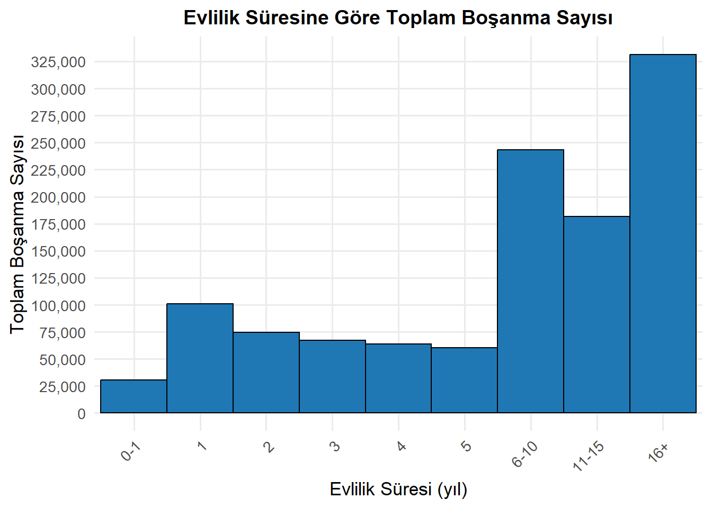
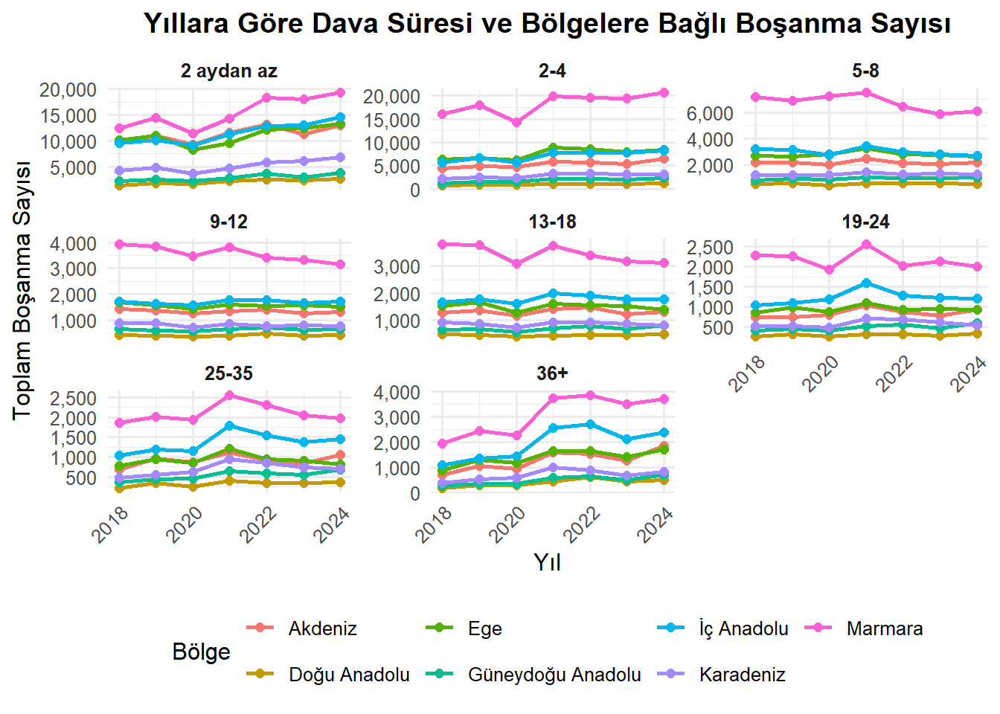

# # Paketi yükle (eğer yüklü değilse önce install.packages("writexl"))
# library(writexl)
#
# # Düzenlenmiş veriyi yeni bir dosyaya kaydet
# write_xlsx(il_ve_dava_suresi_bosanmalar_duzenli, "D:/GOKAY/Hacettepe_YL/MUY665_IsAnalitigi/proje/new_il_ve_dava_suresi_bosanmalar.xlsx")
# write_xlsx(il_ve_evlilik_suresi_bosanmalar_duzenli, "D:/GOKAY/Hacettepe_YL/MUY665_IsAnalitigi/proje/new_il_ve_evlilik_suresi_bosanmalar.xlsx")
#
# bolge_tablosu <- tibble::tibble(
# İl = c("Adana", "Adıyaman", "Afyonkarahisar", "Ağrı", "Amasya", "Ankara", "Antalya", "Artvin", "Aydın",
# "Balıkesir", "Bilecik", "Bingöl", "Bitlis", "Bolu", "Burdur", "Bursa", "Çanakkale", "Çankırı", "Çorum",
# "Denizli", "Diyarbakır", "Edirne", "Elazığ", "Erzincan", "Erzurum", "Eskişehir", "Gaziantep", "Giresun",
# "Gümüşhane", "Hakkari", "Hatay", "Isparta", "Mersin", "İstanbul", "İzmir", "Kars", "Kastamonu",
# "Kayseri", "Kırklareli", "Kırşehir", "Kocaeli", "Konya", "Kütahya", "Malatya", "Manisa", "Kahramanmaraş",
# "Mardin", "Muğla", "Muş", "Nevşehir", "Niğde", "Ordu", "Rize", "Sakarya", "Samsun", "Siirt", "Sinop",
# "Sivas", "Tekirdağ", "Tokat", "Trabzon", "Tunceli", "Şanlıurfa", "Uşak", "Van", "Yozgat", "Zonguldak",
# "Aksaray", "Bayburt", "Karaman", "Kırıkkale", "Batman", "Şırnak", "Bartın", "Ardahan", "Iğdır", "Yalova",
# "Karabük", "Kilis", "Osmaniye", "Düzce"),
# Bölge = c(
# "Akdeniz", "Güneydoğu Anadolu", "Ege", "Doğu Anadolu", "Karadeniz", "İç Anadolu", "Akdeniz", "Karadeniz", "Ege",
# "Marmara", "Marmara", "Doğu Anadolu", "Doğu Anadolu", "Karadeniz", "Akdeniz", "Marmara", "Marmara", "İç Anadolu", "Karadeniz",
# "Ege", "Güneydoğu Anadolu", "Marmara", "Doğu Anadolu", "Doğu Anadolu", "Doğu Anadolu", "İç Anadolu", "Güneydoğu Anadolu", "Karadeniz",
# "Karadeniz", "Doğu Anadolu", "Akdeniz", "Akdeniz", "Akdeniz", "Marmara", "Ege", "Doğu Anadolu", "Karadeniz", "İç Anadolu",
# "Marmara", "İç Anadolu", "Marmara", "İç Anadolu", "Ege", "Doğu Anadolu", "Ege", "Akdeniz", "Güneydoğu Anadolu", "Ege",
# "Doğu Anadolu", "İç Anadolu", "İç Anadolu", "Karadeniz", "Karadeniz", "Marmara", "Karadeniz", "Güneydoğu Anadolu", "Karadeniz", "İç Anadolu",
# "Marmara", "Karadeniz", "Karadeniz", "Doğu Anadolu", "Güneydoğu Anadolu", "Ege", "Doğu Anadolu", "İç Anadolu", "Karadeniz",
# "İç Anadolu", "Karadeniz", "İç Anadolu", "İç Anadolu", "Güneydoğu Anadolu", "Güneydoğu Anadolu", "Karadeniz", "Doğu Anadolu", "Doğu Anadolu", "Marmara",
# "Karadeniz", "Güneydoğu Anadolu", "Akdeniz", "Karadeniz")
# )
#
# veri_long <- veri_long %>%
# left_join(bolge_tablosu, by = "İl")
# write_xlsx(veri_long, path = "D:/GOKAY/Hacettepe_YL/MUY665_IsAnalitigi/proje/evlilik_türetildi.xlsx")
#
# veri_bolgeli <- il_ve_evlilik_suresi_bosanmalar %>%
# left_join(bolge_tablosu, by = "İl")
#
# # 5. Yeni Excel dosyası olarak kaydet
# write_xlsx(veri_bolgeli, "D:/GOKAY/Hacettepe_YL/MUY665_IsAnalitigi/proje/il_ve_evlilik_suresi_bosanmalar.xlsx")Türkiye’de Boşanma Dinamiklerinin Analizi: Bölgesel ve Süre Bazlı Yaklaşımlar
1 Proje Genel Bakış ve Kapsamı
Bu projede 2018 - 2024 yılları arası Türkiye’de boşanma vakaları, hem coğrafi bölgelere hem de dava ve evlilik süresi gibi zaman boyutlarına göre analiz edilmiştir. Amaç, boşanma sayılarını etkileyen temel faktörleri keşfetmek, farklı bölgeler arasındaki yapısal farklılıkları belirlemek ve kısa/uzun dava süreçlerinin hangi bölgelerde yoğunlaştığını ortaya koymaktır. R programlama dili kullanılarak gerçekleştirilen analizde çeşitli görselleştirme teknikleri (bar grafikler, kutu grafikleri, nokta grafikler ve pasta grafikler) yardımıyla boşanma davranışı incelenmiş; ayrıca süreç sürekliliğini değerlendirebilmek adına zaman serisi temelli analizlere de yer verilmiştir.
2 Veri
2.1 Veri Kaynağı
2.2 Veri Hakkında Genel Bilgiler
2 adet veri setimiz bulunmaktadır. Bunlar; “İl ve evlilik süresine göre boşanmalar” ve “İl ve dava süresine göre boşanmalar”. Bu iki veri seti de 2018 - 2024 yılları arasını kapsamaktadır.
İl ve evlilik süresine göre boşanmalar veri seti, Türkiye’de iller ve coğrafi bölgeler bazında boşanma olaylarını evlilik süresi dikkate alınarak detaylı biçimde sunmaktadır. Toplamda 567 gözlem ve 12 değişkenden oluşan veri setinde her satır, bir ilin belirli bir yıl içerisindeki boşanma istatistiklerini temsil etmektedir. “Yıl”, “İl” ve “Bölge” değişkenleri tanımlayıcı nitelikte olup, diğer sütunlar boşanma olaylarının evlilik süresine göre dağılımını içermektedir. Evlilik süresi kategorileri, “0–1 yıl” aralığından başlayıp, “16 yıl ve üzeri” olacak şekilde ayrıntılı olarak sınıflandırılmıştır.
İl ve dave süresine göre boşanmalar veri seti, Türkiye’deki illere ve yıllara göre boşanma davalarının sonuçlanma süresine göre dağılımını içermektedir. Toplam 567 gözlem ve 11 değişkenden oluşan veri setinde her bir satır, bir ilin belirli bir yıl içerisindeki boşanma dağılımını temsil etmektedir. Veri setinde “Yıl”, “İl” ve “Bölge” gibi tanımlayıcı değişkenlerin yanı sıra, boşanma davalarının sürelerine göre ayrıldığı dokuz farklı kategori bulunmaktadır. Bu kategoriler, 2 aydan az süren davalardan başlayarak 36 ay ve üzeri süreyle sonuçlanan davalara kadar detaylı biçimde sınıflandırılmıştır.
2.3 Tercih Sebebi
Tercih edilen bu iki veri seti, Türkiye’deki boşanma dinamiklerini hem dava süresi hem de evlilik süresi bağlamında çok boyutlu olarak incelemeye olanak tanıdığı için tercih edilmiştir. Veri setleri, tüm illeri ve bölgeleri kapsaması sayesinde bölgesel karşılaştırmalar yapmayı mümkün kılarken, zaman değişkeni sayesinde yıllara bağlı eğilim analizlerigerçekleştirmeyi de sağlamaktadır. Ayrıca dava süresi ve evlilik süresi gibi iki farklı değişkenin boşanma sayılarıyla ilişkisi, boşanma davranışlarının altında yatan farklı yapısal faktörleri anlamamıza katkı sunmaktadır.
2.4 Ön İşleme
Veri analizine başlamadan önce veri setlerinde temel ön işleme adımları uygulanmıştır. İlk olarak tüm sütun adları standartlaştırılmış ve gereksiz boşluklar temizlenmiştir. Ardından veri tipleri kontrol edilerek sayısal olmayan alanlar (örneğin yıl, il, bölge) kategorik olarak düzenlenmiştir. Sayısal değişkenlerin dağılımı incelenerek uç değer (outlier) olup olmadığı kontrol edilmiştir. Son olarak analiz ve görselleştirme süreçlerinde kullanılmak üzere veri setleri uygun formatlara dönüştürülmüştür.
Veri setlerinde iller yer almakta ancak bölgeler yer almamaktadır. Her ile karşılık gelen bölge veri setine bir sütun olarak eklenmiştir.
#Sys.setlocale("LC_ALL", 'Turkish')
library(dplyr)
Attaching package: 'dplyr'The following objects are masked from 'package:stats':
filter, lagThe following objects are masked from 'package:base':
intersect, setdiff, setequal, unionlibrary(tidyr)
library(readr)
library(readxl)
library(ggplot2)
library(scales)
Attaching package: 'scales'The following object is masked from 'package:readr':
col_factor# il_ve_evlilik_suresi_bosanmalar veri setini oku
il_ve_evlilik_suresi_bosanmalar <- read_xlsx("D:/Users/user/Documents/GitHub/muy665-bahar2025-takim-r-we-ready/docs/docs/il_ve_evlilik_suresi_bosanmalar.xlsx")
# Yıl sütunundaki boş hücreleri bir önceki dolu değerle doldur
il_ve_evlilik_suresi_bosanmalar_duzenli <- il_ve_evlilik_suresi_bosanmalar %>%
fill("Yıl", .direction = "down")
# Sütunlarda yer alan "-" işaretini 0'la doldur
sutunlar_evliliksuresi <- c("0-1", "1", "2", "3", "4", "5", "6-10", "11-15", "16+")
il_ve_evlilik_suresi_bosanmalar_duzenli <- il_ve_evlilik_suresi_bosanmalar_duzenli %>%
mutate(across(all_of(sutunlar_evliliksuresi), ~ replace(., . == "-", "0"))) %>%
mutate(across(all_of(sutunlar_evliliksuresi), ~ as.numeric(.)))
veri_long <- il_ve_evlilik_suresi_bosanmalar_duzenli %>%
pivot_longer(
cols = -c("İl", "Yıl","Bölge"),
names_to = "Evlilik_Suresi",
values_to = "Bosanma_Sayisi"
)
veri_long$Evlilik_Suresi <- factor(veri_long$Evlilik_Suresi,
levels = c("0-1", "1", "2", "3", "4", "5", "6-10", "11-15", "16+"))
# il_ve_dava_süresi_bosanmalar veri setini oku
il_ve_dava_suresi_bosanmalar <- read_xlsx("D:/Users/user/Documents/GitHub/muy665-bahar2025-takim-r-we-ready/docs/docs/il_ve_dava_suresi_bosanmalar.xlsx")
# Yıl sütunundaki boş hücreleri bir önceki dolu değerle doldur
il_ve_dava_suresi_bosanmalar_duzenli <- il_ve_dava_suresi_bosanmalar %>%
fill("Yıl", .direction = "down")
# Sütunlarda yer alan "-" işaretini 0'la doldur
sutunlar_davasuresi <- c("2 aydan az", "2-4", "5-8", "9-12", "13-18", "19-24", "25-35", "36+")
il_ve_dava_suresi_bosanmalar_duzenli <- il_ve_dava_suresi_bosanmalar_duzenli %>%
mutate(across(all_of(sutunlar_davasuresi), ~ replace(., . == "-", "0"))) %>%
mutate(across(all_of(sutunlar_davasuresi), ~ as.numeric(.)))
dava_veri_long <- il_ve_dava_suresi_bosanmalar_duzenli %>%
pivot_longer(
cols = -c("İl", "Yıl","Bölge"),
names_to = "Dava_Suresi",
values_to = "Bosanma_Sayisi"
)
dava_veri_long$Dava_Suresi <- factor(dava_veri_long$Dava_Suresi,
levels = c("2 aydan az", "2-4", "5-8", "9-12", "13-18", "19-24", "25-35", "36+"))3 Analiz
Evlilik Süresine Göre Boşanma Sayısı
Grafikte, evlilik süresine göre toplam boşanma sayıları kategorik olarak görselleştirilmiştir. Yatay eksende evlilik süresi yıl bazında sınıflandırılmış; dikey eksende ise her sınıfa ait toplam boşanma sayısı gösterilmiştir.
En yüksek boşanma sayısı, 16 yıl ve üzeri evliliklerde gerçekleşmiştir. Bu durum, uzun süreli evliliklerde de boşanmanın sıkça meydana geldiğini ve sürenin artmasının her zaman evliliğin devamı açısından koruyucu bir faktör olmadığını göstermektedir. Bu bulgu, evlilik süresi arttıkça boşanma ihtimalinin azalacağı yönündeki klasik varsayıma karşı bir istisna oluşturmaktadır.
# Tüm yılları bir araya getirip toplam boşanma sayısını hesapla
veri_hist <- veri_long %>%
group_by(Evlilik_Suresi) %>%
summarise(Toplam_Bosanma = sum(Bosanma_Sayisi, na.rm = TRUE)) %>%
ungroup()
ggplot(veri_hist, aes(x = Evlilik_Suresi, y = Toplam_Bosanma)) +
geom_col(fill = "#1f78b4", color = "black", width = 1) +
labs(
title = "Evlilik Süresine Göre Toplam Boşanma Sayısı",
x = "Evlilik Süresi (yıl)",
y = "Toplam Boşanma Sayısı"
) +
theme_minimal(base_size = 13) +
theme(
axis.text.x = element_text(angle = 45, hjust = 1),
panel.grid.minor = element_blank(),
plot.title = element_text(size = 14, face = "bold", hjust = 0.5)
) +
scale_y_continuous(
labels = comma,
breaks = seq(0, max(veri_hist$Toplam_Bosanma), by = 25000)
)
Coğrafi Bölgelere Göre Boşanma Sayısı Karşılaştırması
Grafikte Türkiye’nin yedi coğrafi bölgesi için toplam boşanma sayıları sunulmuştur. Görsel veriye göre en yüksek boşanma sayısı Marmara Bölgesi’ne aittir. Bu bölgeyi sırasıyla İç Anadolu, Ege ve Akdeniz bölgeleri takip etmektedir. En düşük boşanma sayıları ise Doğu Anadolu ve Güneydoğu Anadolu bölgelerinde gözlemlenmektedir.
Marmara Bölgesi açık ara farkla en fazla boşanma vakasına sahiptir. Bu durum büyük ölçüde bölgenin nüfus yoğunluğunun yüksek olmasına bağlanabilir. İstanbul gibi metropol şehirleri barındıran Marmara, Türkiye’nin ekonomik, sosyal ve sanayi açıdan en yoğun bölgelerinden biridir.
İç Anadolu, Ege ve Akdeniz bölgeleri de görece yüksek boşanma sayılarına sahiptir. Bu üç bölgede de büyük şehirlerin (Ankara, İzmir, Antalya gibi) bulunması, bölgelerdeki boşanma sayısını arttırmaktadır.
Boşanma sayısının düşük olduğu bölgelerde, sosyokültürel normlar ve toplumsal baskıların bireylerin boşanma kararlarını sınırlandırıcı bir rol oynaması muhtemeldir.
veri_bolge <- veri_long %>%
group_by(Bölge) %>%
summarise(Toplam_Bosanma = sum(Bosanma_Sayisi, na.rm = TRUE)) %>%
arrange(desc(Toplam_Bosanma))
ggplot(veri_bolge, aes(x = reorder(Bölge, -Toplam_Bosanma), y = Toplam_Bosanma)) +
geom_col(width = 1, fill = "#1f78b4", color = "black") + # birleşik sütunlar
labs(
title = "Coğrafi Bölgelere Göre Toplam Boşanma Sayısı",
x = "Bölge",
y = "Toplam Boşanma Sayısı"
) +
theme_minimal(base_size = 13) +
theme(
axis.text.x = element_text(angle = 30, hjust = 1),
plot.title = element_text(size = 14, face = "bold", hjust = 0.5)
) +
scale_y_continuous(
labels = comma,
breaks = seq(0, max(veri_bolge$Toplam_Bosanma), by = 25000)
)Yıl ve Bölgelere Göre Boşanma Sayısı Karşılaştırması
Grafikte, 2018 ile 2024 yılları arasında Türkiye’nin yedi coğrafi bölgesine göre yıllık toplam boşanma sayıları gösterilmiştir. Grafik, hem zaman serisi hem de çoklu kategorik değişken (bölge) üzerinden karşılaştırma imkânı sunmaktadır.
Zaman içinde genel boşanma eğilimi incelendiğinde, 2020 yıllarında bir miktar düşüş dikkat çekmektedir. Bu düşüş, doğrudan grafik kapsamında modellenmemiş olsa da, COVID-19 pandemisinin sosyal ve kurumsal etkileriyle ilişkilendirilebilir. Pandemi döneminde adli süreçlerin yavaşlaması, fiziksel erişim kısıtları ve genel belirsizlik ortamı, boşanma kararlarının ertelenmesine veya uygulanabilirliğinin geçici olarak zayıflamasına neden olmuş olabilir.
2021 yılından itibaren boşanma sayılarında yeniden artış gözlemlenmektedir. 2021 sonrası artış, gecikmiş boşanma kararlarının birikimli olarak yansıması olarak değerlendirilebilir. Bu artış eğilimi, yıllar bazında pozitif bir trend olduğuna işaret eder. Özellikle Marmara, İç Anadolu ve Ege bölgelerinde yıllara göre istikrarlı bir artış eğilimi bulunmaktadır.
# Yıllara ve bölgelere göre boşanma sayılarını grupla
veri_yil_bolge <- veri_long %>%
group_by(Yıl, Bölge) %>%
summarise(Toplam_Bosanma = sum(Bosanma_Sayisi, na.rm = TRUE)) %>%
ungroup()`summarise()` has grouped output by 'Yıl'. You can override using the `.groups`
argument.# Yıl sıralı sayı olarak dursun
veri_yil_bolge$Yıl <- as.numeric(veri_yil_bolge$Yıl)
# Grafik
ggplot(veri_yil_bolge, aes(x = Yıl, y = Toplam_Bosanma, fill = Bölge)) +
geom_col(position = "dodge", color = "black") +
labs(
title = "Yıllara ve Bölgelere Göre Boşanma Sayıları",
x = "Yıl",
y = "Toplam Boşanma Sayısı",
fill = "Bölge"
) +
theme_minimal(base_size = 13) +
theme(
plot.title = element_text(size = 14, face = "bold", hjust = 0.5),
axis.text.x = element_text(angle = 45, hjust = 1)
) +
scale_x_continuous(breaks = sort(unique(veri_yil_bolge$Yıl))) +
scale_y_continuous(labels = comma, breaks = seq(0, max(veri_bolge$Toplam_Bosanma), by = 5000))
ggplot(veri_yil_bolge, aes(x = Yıl, y = Toplam_Bosanma, color = Bölge)) +
geom_point(size = 3, alpha = 0.8) +
labs(
title = "Yıllara ve Bölgelere Göre Boşanma Sayıları",
x = "Yıl",
y = "Toplam Boşanma Sayısı",
color = "Bölge"
) +
theme_minimal(base_size = 13) +
theme(
plot.title = element_text(size = 14, face = "bold", hjust = 0.5),
axis.text.x = element_text(angle = 45, hjust = 1)
) +
scale_y_continuous(labels = comma) +
scale_x_continuous(breaks = sort(unique(veri_yil_bolge$Yıl))) +
scale_y_continuous(labels = comma, breaks = seq(0, max(veri_bolge$Toplam_Bosanma), by = 5000))Scale for y is already present.
Adding another scale for y, which will replace the existing scale.Evlilik Süresi Gruplarına Göre Bölgelerdeki Boşanma Sayısı Karşılaştırması
Grafikte, evlilik süresine göre iki ayrı gruba ayrılmış (1–5 yıl ve 6+ yıl) boşanma sayıları, Türkiye’nin yedi coğrafi bölgesine göre karşılaştırmalı olarak sunulmuştur. Her bir bölge için kısa süreli (1–5 yıl) ve uzun süreli (6 yıl ve üzeri) evliliklerde gerçekleşen boşanmaların toplam sayıları iki ayrı panelde gösterilmektedir.
Veri incelendiğinde, her iki sürede de Marmara Bölgesi belirgin şekilde en yüksek boşanma sayısına sahiptir. Diğer bölgelerle kıyaslandığında, Marmara’daki fark özellikle uzun süreli boşanmalarda ciddi şekilde artış göstermektedir. Bu durum, bölgenin yüksek evlilik hacminin yanı sıra evlilik süresine bağlı olarak boşanma eğilimlerinin daha yoğun yaşandığını göstermektedir.
Kısa süreli boşanmalarda ikinci sırada yer alan bölgeler İç Anadolu, Ege ve Akdeniz, benzer seviyelerde değerlere sahiptir. Diğer bölgelerde boşanma sayısı belirgin şekilde daha düşüktür. Bu tablo, kısa süreli evliliklerde boşanma eğiliminin daha çok nüfus yoğunluğu yüksek ve şehirleşmiş bölgelerde gerçekleştiğini göstermektedir.
Uzun süreli boşanmalara bakıldığında ise tüm bölgelerde belirgin bir artış gözlemlenmektedir. Bu artışın oranı, kısa süreli boşanmalara göre daha yüksek olup, veri setinde uzun evliliklerde boşanmanın daha yaygın olduğunu göstermektedir.
# 1. Evlilik sürelerini kısa / uzun olarak kategorize et
veri_long_kategorili <- veri_long %>%
mutate(Sure_Grubu = case_when(
Evlilik_Suresi %in% c("0-1", "1", "2", "3", "4", "5") ~ "Kısa Süre(1-5 Yıl)",
Evlilik_Suresi %in% c("6-10", "11-15", "16+") ~ "Uzun Süre (6+ Yıl)",
TRUE ~ "Diğer"
))
# 2. Bölge ve süre grubuna göre toplam boşanma
veri_bolge_sure <- veri_long_kategorili %>%
filter(Sure_Grubu != "Diğer") %>%
group_by(Bölge, Sure_Grubu) %>%
summarise(Toplam_Bosanma = sum(Bosanma_Sayisi, na.rm = TRUE)) %>%
ungroup()`summarise()` has grouped output by 'Bölge'. You can override using the
`.groups` argument.# 3. Grafik
ggplot(veri_bolge_sure, aes(x = reorder(Bölge, Toplam_Bosanma), y = Toplam_Bosanma, fill = Bölge)) +
geom_col(show.legend = FALSE) +
facet_wrap(~ Sure_Grubu) +
labs(
title = "Evlilik Süresi Grupları - Bölge Boşanma Sayısı",
x = "Bölge",
y = "Toplam Boşanma Sayısı"
) +
theme_minimal(base_size = 13) +
theme(
axis.text.x = element_text(angle = 30, hjust = 1),
plot.title = element_text(face = "bold", hjust = 0.5)
) +
scale_y_continuous(labels = comma, breaks = seq(0, max(veri_bolge$Toplam_Bosanma), by = 20000))Dava Süresine Göre Bölgelerdeki Boşanma Sayısı Karşılaştırması
Grafikte, boşanma davalarının sonuçlanma süresi ile evliliklerde gerçekleşen toplam boşanma sayısı arasındaki ilişki incelenmiştir. Yatay eksende dava süresi (kategorik aralıklarla), dikey eksende ise toplam boşanma sayısı yer almaktadır. Renklerle gösterilen noktalar, her dava süresi kategorisinde farklı coğrafi bölgeleri temsil etmektedir.
Veri incelendiğinde, en yüksek boşanma sayısı 2 aydan az süren davalar kategorisinde görülmektedir. Özellikle Marmara Bölgesi, bu kategoride diğer bölgelerden açık farkla ayrılmaktadır. Aynı şekilde Akdeniz, İç Anadolu ve Ege gibi bölgelerde de kısa sürede sonuçlanan boşanma davalarının yüksek sayılara ulaştığı görülmektedir. Bu durum, boşanma sürecinin hızlı sonuçlandığı durumlarda anlaşmalı boşanmaların yaygın olduğunudüşündürebilir. Ayrıca dava süresi kısa olan boşanmaların, taraflar arasında çekişmenin az olduğu vakaları yansıttığı değerlendirilebilir.
Dava süresi arttıkça boşanma sayılarında belirgin bir azalma gözlemlenmektedir. Özellikle 5 ay ve sonrasında, tüm bölgelerdeki noktalar benzer seviyelerde sıkışmakta ve boşanma sayıları 20.000’in altına düşmektedir. Boşanma vakalarının büyük kısmı kısa dava süresine sahipken, dava süresi uzadıkça olay sayısı hızla azalmaktadır.
# Toplam boşanma sayısını dava süresine göre hesapla
dava_pie <- dava_veri_long %>%
group_by(Dava_Suresi) %>%
summarise(Toplam_Bosanma = sum(Bosanma_Sayisi, na.rm = TRUE)) %>%
mutate(Yuzde = round(Toplam_Bosanma / sum(Toplam_Bosanma) * 100, 1)) %>%
ungroup()
# Dava süresi sıralı faktör
dava_pie$Dava_Suresi <- factor(
dava_pie$Dava_Suresi,
levels = c("2 aydan az", "2-4", "5-8", "9-12", "13-18", "19-24", "25-35", "36+"),
ordered = TRUE
)
# Daire grafiği
ggplot(dava_pie, aes(x = "", y = Toplam_Bosanma, fill = Dava_Suresi)) +
geom_col(width = 1, color = "white") +
coord_polar(theta = "y") +
geom_text(aes(label = paste0(Yuzde, "%")),
position = position_stack(vjust = 0.5), color = "white", size = 4) +
labs(
title = "Dava Süresine Göre Toplam Boşanma Oranları",
fill = "Dava Süresi"
) +
theme_void(base_size = 13) +
theme(
plot.title = element_text(face = "bold", hjust = 0.5)
)dava_karsilastirma <- dava_veri_long %>%
group_by(Dava_Suresi, Bölge) %>%
summarise(Toplam_Bosanma = sum(Bosanma_Sayisi, na.rm = TRUE)) %>%
ungroup()`summarise()` has grouped output by 'Dava_Suresi'. You can override using the
`.groups` argument.ggplot(dava_karsilastirma, aes(x = Dava_Suresi, y = Toplam_Bosanma, color = Bölge)) +
geom_point(position = position_dodge(width = 0.5), size = 3) +
labs(
title = "Dava Süresine Göre Evliliklerde Boşanma Sayısı",
x = "Dava Süresi",
y = "Toplam Boşanma Sayısı",
color = "Evlilik Süresi Grubu"
) +
theme_minimal(base_size = 13) +
theme(
axis.text.x = element_text(angle = 45, hjust = 1),
plot.title = element_text(face = "bold", hjust = 0.5)
) +
scale_y_continuous(labels = comma, breaks = seq(0, max(dava_karsilastirma$Toplam_Bosanma), by = 10000))# Dava süresi sıralı faktör olarak ayarlanmalı
dava_veri_long$Dava_Suresi <- factor(
dava_veri_long$Dava_Suresi,
levels = c("2 aydan az", "2-4", "5-8", "9-12", "13-18", "19-24", "25-35", "36+"),
ordered = TRUE
)
# Boxplot
ggplot(dava_veri_long, aes(x = Dava_Suresi, y = Bosanma_Sayisi)) +
geom_boxplot(fill = "#1f78b4", alpha = 0.7, outlier.color = "red") +
labs(
title = "Dava Süresine Göre Boşanma Sayısı Dağılımı",
x = "Dava Süresi",
y = "Boşanma Sayısı"
) +
theme_minimal(base_size = 13) +
theme(
plot.title = element_text(face = "bold", hjust = 0.5),
axis.text.x = element_text(angle = 45, hjust = 1)
) +
scale_y_log10(labels = scales::comma)Warning in scale_y_log10(labels = scales::comma): log-10 transformation
introduced infinite values.Warning: Removed 4 rows containing non-finite outside the scale range
(`stat_boxplot()`).Yıllara Göre Dava Süresine Bağlı Boşanma Sayılarının Karşılaştırması
Grafikte, 2018–2024 yılları arasında boşanma davalarının sonuçlanma süresiyle ilişkili toplam boşanma sayıları gösterilmiştir. Her panel bir yılı temsil etmekte olup, yatay eksende dava süresi kategorileri; dikey eksende ise o yıl içinde ilgili dava süresinde tamamlanan boşanma sayısı yer almaktadır.
Dava süresi uzadıkça boşanma sayılarında sistematik bir azalma gözlemlenmektedir. Tüm yıllarda bu azalış benzer şekilde devam etmektedir. Zaman serisi perspektifinden bakıldığında, yıllar arası genel eğilim oldukça kararlıdır. Yani dava süresi arttıkça boşanma sayısında düşüş görülmesi, her yıl tekrarlanan bir paterndir. Bu yapı, yıllık dalgalanmaların olmasına rağmen dava süresi ile boşanma sayısı arasındaki ilişkinin güçlü ve istikrarlı olduğunu göstermektedir.
Veri seti genelinde “2 aydan az” dava süresi kategorisi her yıl açık ara en yüksek boşanma sayısına sahiptir. Bu durum, anlaşmalı boşanma yönteminin Türkiye genelinde yaygın bir tercih olduğunu, taraflar arasında ciddi bir anlaşmazlık yaşanmadığında boşanma süreçlerinin oldukça hızlı ilerlediğini göstermektedir.
Genel eğilim değerlendirildiğinde, dava süresi uzadıkça boşanma sıklığının azalması, sosyal yapı ve hukuki erişim açısından Türkiye’de boşanma kararlarının, taraflar arasında uzlaşma olduğu sürece hızlı ve yaygın bir şekilde sonuçlandığı; ancak süreç çekişmeli hale geldikçe hem toplumsal hem de bireysel faktörler (maddi yetersizlik, sosyal baskılar, duygusal yük) boşanma kararını zorlaştırmakta ve davaların daha nadir hale gelmesine yol açmaktadır.
# 1. Yıl ve dava süresine göre toplam boşanma sayısını hesapla
dava_yil_ozet <- dava_veri_long %>%
group_by(Yıl, Dava_Suresi) %>%
summarise(Toplam_Bosanma = sum(Bosanma_Sayisi, na.rm = TRUE)) %>%
ungroup()`summarise()` has grouped output by 'Yıl'. You can override using the `.groups`
argument.# 2. Dava süresini sıralı faktör haline getir (görsel için)
dava_yil_ozet$Dava_Suresi <- factor(
dava_yil_ozet$Dava_Suresi,
levels = c("2 aydan az", "2-4", "5-8", "9-12", "13-18", "19-24", "25-35", "36+"),
ordered = TRUE
)
# 3. Grafik (facet ile her yıl için ayrı panel)
ggplot(dava_yil_ozet, aes(x = Dava_Suresi, y = Toplam_Bosanma)) +
geom_point(color = "#1f78b4", size = 3) +
facet_wrap(~ Yıl) +
labs(
title = "Yıllara Göre Dava Süresine Bağlı Boşanma Sayıları",
x = "Dava Süresi",
y = "Toplam Boşanma Sayısı"
) +
theme_minimal(base_size = 12) +
theme(
strip.text = element_text(face = "bold"),
axis.text.x = element_text(angle = 90, hjust = 1),
plot.title = element_text(face = "bold", hjust = 0.5)
) +
scale_y_continuous(labels = comma, breaks = seq(0, max(dava_karsilastirma$Toplam_Bosanma), by = 10000))Yıllara Göre Dava Süresi ve Bölgelere Bağlı Boşanma Sayısı Karşılaştırması
Grafikte, 2018–2024 yılları arasında farklı dava süresi kategorilerine göre Türkiye’nin yedi coğrafi bölgesindeki boşanma sayılarının yıllık değişimi gösterilmiştir. Her panel bir dava süresi aralığını temsil etmekte; paneller içinde yer alan çizgiler ise bölgeler arasındaki yıllık boşanma sayısı değişimlerini sunmaktadır.
Genel eğilimlere bakıldığında, “2 aydan az” dava süresi grubunda açık bir şekilde en yüksek boşanma sayısı Marmara Bölgesi’ne aittir. Bu kategori, tüm bölgeler için en yüksek boşanma hacmine sahip paneldir. Marmara bölgesindeki değerlerin diğer tüm bölgelerden belirgin biçimde ayrıldığı ve uç değer etkisi oluşturduğu görülmektedir. Tüm bölgeler için eğriler yıllar arasında dalgalı ancak büyük sıçramalardan uzak bir yapı sergilemektedir. Uzun dava süreçlerinin nadiren görüldüğünü ve bölgesel farkların uzun vadeli davalarda daha dar bantta kaldığını göstermektedir.
# 1. Toplam boşanma sayısını Yıl, Bölge ve Dava Süresi bazında grupla
dava_yil_bolge <- dava_veri_long %>%
group_by(Yıl, Bölge, Dava_Suresi) %>%
summarise(Toplam_Bosanma = sum(Bosanma_Sayisi, na.rm = TRUE)) %>%
ungroup()`summarise()` has grouped output by 'Yıl', 'Bölge'. You can override using the
`.groups` argument.# 2. Dava süresini sıralı faktör olarak ayarla
dava_yil_bolge$Dava_Suresi <- factor(
dava_yil_bolge$Dava_Suresi,
levels = c("2 aydan az", "2-4", "5-8", "9-12", "13-18", "19-24", "25-35", "36+"),
ordered = TRUE
)
# 3. Grafik
ggplot(dava_yil_bolge, aes(x = Yıl, y = Toplam_Bosanma, color = Bölge)) +
geom_line(linewidth = 1) +
geom_point(size = 2) +
facet_wrap(~ Dava_Suresi, scales = "free_y") +
labs(
title = "Yıllara Göre Dava Süresi ve Bölgelere Bağlı Boşanma Sayısı",
x = "Yıl",
y = "Toplam Boşanma Sayısı",
color = "Bölge"
) +
theme_minimal(base_size = 12) +
theme(
strip.text = element_text(face = "bold"),
axis.text.x = element_text(angle = 45, hjust = 1),
plot.title = element_text(face = "bold", hjust = 0.5),
legend.position = "bottom"
) +
scale_y_continuous(labels = scales::comma)
# Toplam boşanma sayısını Dava Süresi ve Bölge bazında hesapla
dava_sure_bolge <- dava_veri_long %>%
group_by(Dava_Suresi, Bölge) %>%
summarise(Toplam_Bosanma = sum(Bosanma_Sayisi, na.rm = TRUE)) %>%
ungroup()`summarise()` has grouped output by 'Dava_Suresi'. You can override using the
`.groups` argument.# Dava süresini sıralı faktör olarak ayarla
dava_sure_bolge$Dava_Suresi <- factor(
dava_sure_bolge$Dava_Suresi,
levels = c("2 aydan az", "2-4", "5-8", "9-12", "13-18", "19-24", "25-35", "36+"),
ordered = TRUE
)
# Barplot (Gruplanmış histogram görünümü)
ggplot(dava_sure_bolge, aes(x = Dava_Suresi, y = Toplam_Bosanma, fill = Bölge)) +
geom_col(position = position_dodge2(width = 0.8, preserve = "single"), color = "black", width = 0.9) +
labs(
title = "Dava Süresine ve Bölgelere Göre Boşanma Sayıları",
x = "Dava Süresi",
y = "Toplam Boşanma Sayısı",
fill = "Bölge"
) +
theme_minimal(base_size = 13) +
theme(
plot.title = element_text(face = "bold", hjust = 0.5),
axis.text.x = element_text(angle = 45, hjust = 1)
) +
scale_y_continuous(labels = comma, breaks = seq(0, max(dava_sure_bolge$Toplam_Bosanma), by = 10000))4 Sonuçlar ve Ana Çıkarımlar
Bu çalışma, Türkiye’deki boşanma dinamiklerini hem coğrafi bölgelere hem de evlilik ve dava süresi gibi zaman boyutlarına dayalı olarak çok boyutlu bir yaklaşımla incelemiştir. Elde edilen bulgular, boşanma olgusunun yalnızca kısa süreli evliliklerle sınırlı olmadığını; uzun yıllar süren evliliklerin de yüksek oranda boşanma ile sonuçlanabildiğini ortaya koymaktadır. Özellikle “16 yıl ve üzeri” evlilik kategorisinde boşanma oranlarının dikkat çekici seviyede olması, evlilik süresinin tek başına evliliğin devamlılığını garanti etmediğini göstermektedir.
Dava süresi açısından değerlendirildiğinde, boşanma davalarının büyük çoğunluğunun 0–2 ay içinde sonuçlandığı ve bu sürecin anlaşmalı boşanmaların yaygınlığına işaret ettiği anlaşılmaktadır. Dava süresi uzadıkça boşanma sayılarında sistematik bir azalma gözlemlenmiş; özellikle 12 ayı aşan süreçlerde tüm bölgelerde belirgin bir düşüş yaşanmıştır. Bu eğilim, yıllar boyunca istikrarlı bir şekilde devam etmiş ve dava süresi ile boşanma oranı arasında güçlü bir ters ilişki olduğunu ortaya koymuştur.
Bölgesel analizler, Marmara Bölgesi’nin hem toplam boşanma sayısında hem de farklı dava süresi aralıklarındaki çeşitlilikte açık ara önde olduğunu göstermektedir. Benzer şekilde Ege, İç Anadolu ve Akdeniz gibi büyükşehir barındıran bölgelerde de yüksek boşanma oranları dikkat çekmiştir. Buna karşın boşanma oranlarının düşük olduğu bölgelerde, sosyokültürel normlar ve toplumsal baskıların bireylerin boşanma kararlarını sınırlayıcı bir rol oynayabileceği değerlendirilmektedir.
Genel olarak, analizler boşanma olgusunun çok boyutlu ve yapısal bir mesele olduğunu göstermektedir. Evlilik süresi, dava süresi ve bölgesel farklar, boşanma eğilimlerini şekillendiren temel değişkenlerdir.